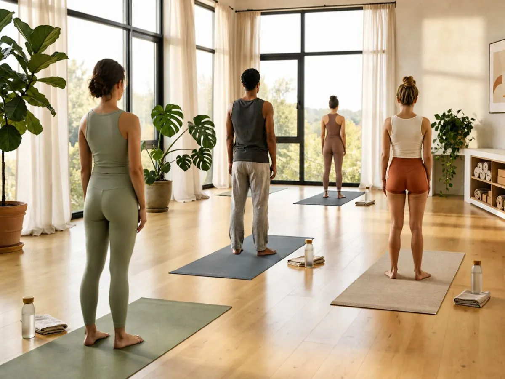

Yoga in Nijmegen: de beste studio voor jouw stijl
Bijgewerkt op 21 november 2026.
Yoga is niet één ding. In de ene les sta je te zweten in een warme zaal, in de andere lig je twintig minuten stil. Weet je welke stijl je zoekt, of wil je juist ontdekken wat bij je past? Per stijl zetten we de Nijmeegse studio's op een rij.

Zo hebben we gekozen
We lazen in november 2026 de websites van de yogastudio's in onze bedrijvengids. Bijna overal kun je een proefles doen of een losse les boeken. Kijk voor tijden altijd in het rooster op de site.
Actief en zweten
Bikram Yoga Nijmegen: yoga in een warme zaal
In de studio aan de Gerard Noodtstraat loopt de temperatuur bij de klassieke Bikram-serie op tot zo'n 38 graden. De Core- en Yin-lessen zijn wat milder verwarmd. Elke les duurt anderhalf uur.
Je hoeft niet lenig of ervaren te zijn om mee te doen.
Goed voor: wie na een les flink bezweet naar huis wil.
Yogalicht: Power Vinyasa zonder zweverig gedoe
Carolien Grooten geeft nuchtere lessen met een vleugje humor. Je kiest uit Power Vinyasa, Medium Flow en Easy Flow, of je zakt juist rustig weg in Yin Yoga.
Liever één-op-één? Dan kan dat ook.
Goed voor: wie sportief wil bewegen.
Veel stijlen en tijden
YogaPoint: van Ashtanga tot Yoga Nidra
In de Van Welderenstraat kies je uit dynamische Vinyasa en Ashtanga, rustige Hatha, Yin en Yoga Nidra. Er staan ook pilateslessen op het rooster, en je kunt online meedoen.
YogaPoint is een keten met studio's in onder meer Utrecht en Den Bosch.
Goed voor: wie verschillende stijlen wil proberen.
De Yogaplaats: een collectief in de Splendorfabriek
In de Splendorfabriek, net achter de Groenestraat, geeft een collectief van docenten de hele week les in een eigen ruimte boven aan de trap. Elke docent heeft eigen lessen, dus je kiest een dag en tijd die je past.
Er zijn lessen 's ochtends voor het werk en 's avonds om tot rust te komen.
Goed voor: wie een les wil die in zijn week past.
Rustig en zacht
Yoga-studio Susumna: met hooguit veertien mensen
In deze kleine studio oefen je met hooguit veertien mensen, zodat docent Els tijd heeft om je bij te sturen. Je kiest uit actieve hatha, rustige yin of een combinatie van de twee.
Een les duurt 75 minuten en eindigt met een lange ontspanning. Er is ook zwangerschapsyoga.
Goed voor: beginners en zwangere vrouwen.
Yogahart: restoratief, yoga nidra en yoga voor hardlopers
Bij Yogahart kies je een les die past bij je energie van dat moment: actief bewegen bij dynamische hatha, of helemaal loslaten bij restoratieve yoga of yoga nidra.
Er is ook een les speciaal voor hardlopers, met aandacht voor kracht en ademhaling. Een proefles kan.
Goed voor: hardlopers en wie moe is.
Aan de Bron: zachte hatha voor een stijve rug
Aan de d'Almarasweg krijg je zaallessen hatha in de traditie van Kashmir Yoga. Het draait meer om hoe een houding voelt dan om hem perfect neer te zetten, met veel ademwerk.
Er zijn lessen op maandagavond en op woensdag-, donderdag- en vrijdagochtend.
Goed voor: wie last heeft van een stijve rug.
Voor kinderen
Inner Spring: kinder- en peuteryoga
Aan de Diamantstraat begeleidt Moni Hubers kinderen, tieners en volwassenen met mindful heartful yoga, kinder- en peuteryoga en coaching rond hoogsensitiviteit.
Je kiest voor een groepsserie of een persoonlijk traject. Volwassenen kunnen er ook pilates doen.
Goed voor: kinderen met een vol hoofd.
Tai chi
De Kleine Weg: T'ai Chi en Qi Gong
Bij De Kleine Weg School leer je T'ai Chi en Qi Gong in groepen voor alle leeftijden. Je oefent in Cordium in Nijmegen-Oost of op de campus van de Radboud Universiteit.
Ook als staan lastig is, kun je meedoen in een aangepaste les. Een proefles kan.
Goed voor: senioren en wie rustig wil bewegen.
Zelf yogadocent worden
Dutch Yoga Academy: een 200-uurs Vinyasa-opleiding
Bij deze academie volg je een 200-uurs opleiding tot Vinyasa-docent, verspreid over tien weekenden in één jaar. Daartussen studeer je zelf en oefen je met lesgeven.
Oprichter Merel Martens studeerde geneeskunde en woonde jarenlang in India.
Goed voor: wie zelf les wil gaan geven.
Ook goed
- Anahata bij het Keizer Karelplein: yoga en meditatie op een zolder bij de Titus Brandsmakerk.
- Yoga Studio Harsa aan de Bijleveldsingel: yoga met een Indiase achtergrond, en Dance Yoga.
- Yogaschool Ron van der Post: sinds 1996 een opleiding in Dynamische Hatha Yoga.
- Kernyoga: nuchtere groepslessen op verschillende plekken in de stad.
Liever iets met meer tempo? Lees ook dansscholen in Nijmegen per dansstijl.
Meer in onze gids sporten en zwemmen in Nijmegen.
Veelgestelde vragen
Waar doe je hot yoga in Nijmegen?
Bij Bikram Yoga Nijmegen aan de Gerard Noodtstraat, in een zaal tot zo'n 38 graden.
Waar doe je yoga voor beginners in Nijmegen?
In kleine groepen bij Yoga-studio Susumna, of in een rustige hathales bij Aan de Bron. Bij de meeste studio's kun je een proefles doen.
Waar doe je kinderyoga in Nijmegen?
Bij Inner Spring aan de Diamantstraat, met kinder- en peuteryoga.
Waar kun je in Nijmegen een yogadocentenopleiding volgen?
Bij de Dutch Yoga Academy (200 uur Vinyasa) en Yogaschool Ron van der Post (Dynamische Hatha Yoga).